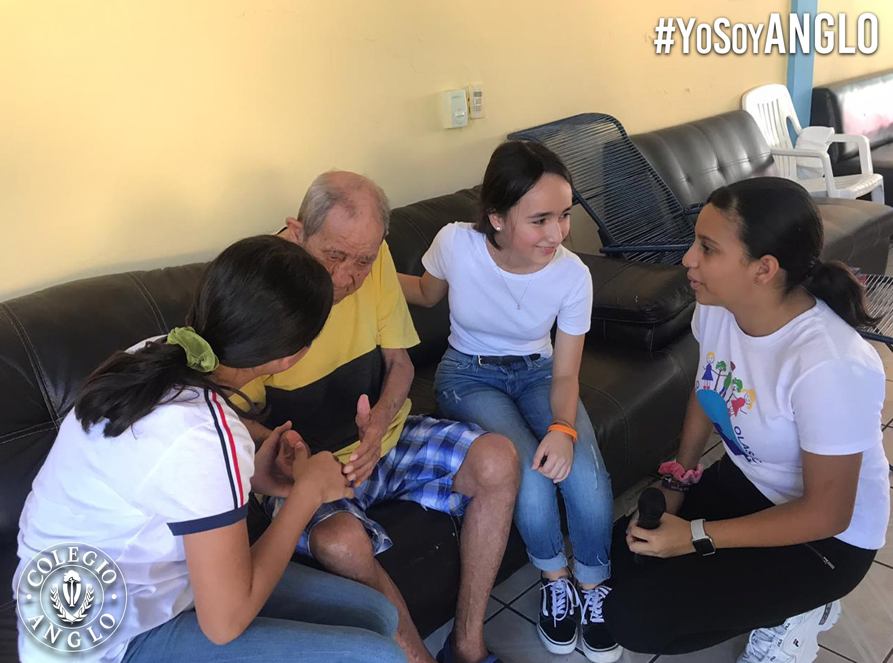

Olas de Ayuda
- "Olas de Ayuda" fue una iniciativa de mi colegio con el fin de ayudar a la comunidad. Se centraba en proyectos comunitarios que fueran para beneficio de los cuidadanos.
- Algunas de las actividades que realizamos fue limpiar la calle, llevar alimentos a familiares que esperan a alguien en el hospital, víveres para la casa hogar de ancianos, entre otras actividades.
- Participé desde la planeación de este proyecto: elegir el nombre y el logotipo y ayudar a realizar las actividades ya mencionadas.
- De esta manera, a pesar de utilizar de mi tiempo libre, me sentí muy orgullosa de haber participado, debido a que sabía que estaba apoyando a mi comunidad y se sentía reconfortante ver cómo las personas agradecían estos gestos solidarios.